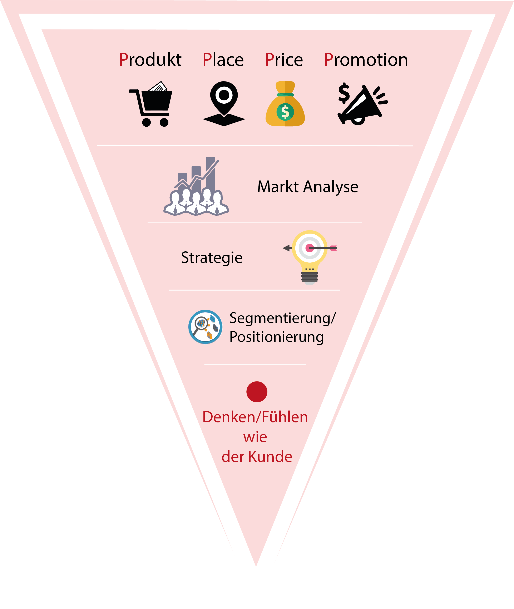
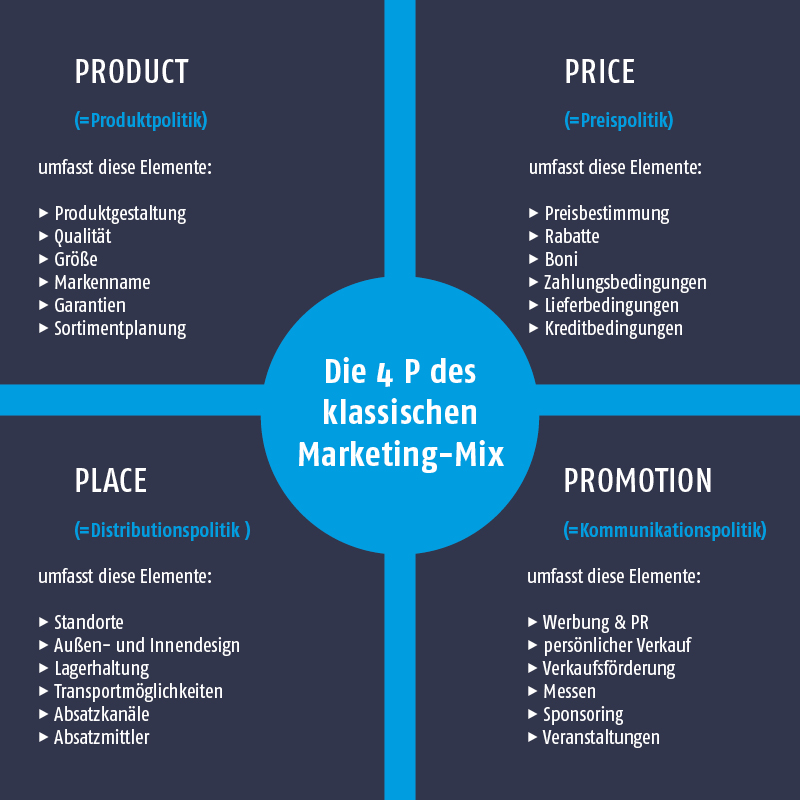
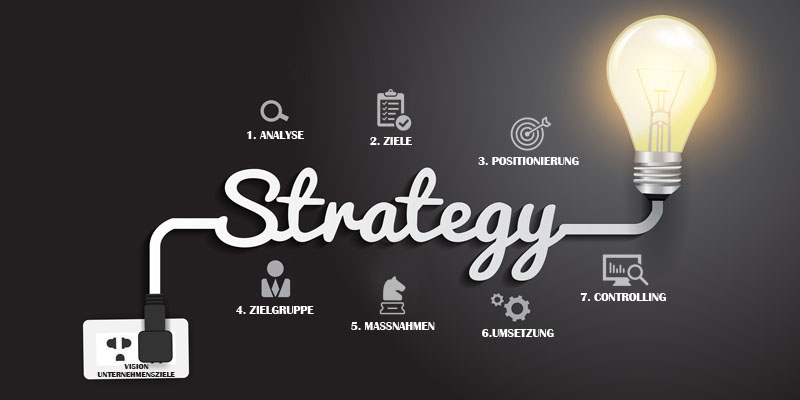
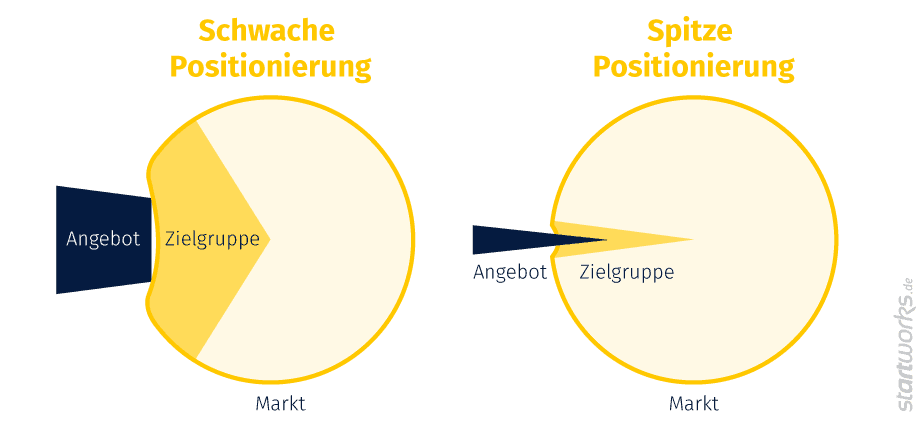

Marketing
Die Aufgabe des Marketings ist es, Produkte und Dienstleistungen so zu vermarkten, dass potentielle
Kunden sich angesprochen fühlen und beispielsweise zum Kauf angeregt werden.
Das Marketing lässt sich in diese fünf Bereiche aufteilen.

Product Place Price Promotion
Der Markt unterteilt sich in die vier Elemente, die sich auf Englisch
"4 P"s nennen:
Product, Price, Place, Promotion.
Unter diesen Begriffen werden alle Entscheidungen und Handlungen zusammengefasst, die eine
erfolgreiche Vermarktung von Produkten und Dienstleistungen ermöglichen.
Was ist die grundlegende Logik dahinter?
"Das richtige Produkt muss zum richtigen Preis über den passenden Distributionskanal mit
der wirksamsten Kommunikation zur richtigen Zeit im Markt platziert und angeboten werden."
Vor allem die Promotion, ist ein wichtiger Punkt, da durch diesen die Verbindung zum Kunden hergestellt wird.

Marktanalyse
Die Analyse des Markes soll die aktuelle Marktsituation darlegen und dabei helfen, beispielsweise eine passende Vermarktungsstrategie
zu erarbeiten. Dabei erfolgt eine Auswertung durch genaue Betrachtung der aktuellen Situation der betreffenden Firma oder Branche.
Nehmen wir an, wir vertreten eine Firma aus dem Gesundheitssektor. Logischerweise sollte bei der Vermarktung von deren Anliegen
anders vorgegangen werden, als beispielsweise bei der Vermarktung von Produkten eines
Spieleherstellers.
Es muss hinterfragt werden,...:
- wer das Produkt oder die Dienstleistung kauft.
- welche Anforderungen oder Erwartungen der Kunde hat.
- wie die Interessen der Zielgruppe aussehen.
- wie die Zielgruppe erreicht werden kann.
- wie das Interesse potentieller neuer Kunden geweckt werden kann.
- wie gut die Zuschauer über die Firma aufgeklärt werden müssen.
Das Ziel einer Marktanalyse ist demnach die Bedürfnisse der entsprechenden Kunden zu kennen und herauszufinden, wie die Kunden erreicht werden können. Wichtig ist, dass die Kunden sich durch das Video oder den Werbespot mit der Firma identifizieren können.
Die Konkurrenz
Um eine Firma nach aussen hin vertreten zu können, muss die Konkurrenz ausfindig gemacht werden. Hat die betreffende Firma einen
einzigartigen Markbereich für sich beansprucht oder gibt es viele Unternehmen, die ähnliche Produkte oder Dienstleistungen vermarkten?
Oder ist eine Konkurrenz zu erkennen, die gegen den Verkauf der betreffenden Firma vorgeht? Wie müsste also, um ein
Beispiel zu nennen, die Gesundheitsförderung Schweiz gegen den Handykonsum vorgehen, trotz der grossen Konkurrenz in Form von den
Handyherstellern?
Die Stärken und Schwächen der Konkurrenten sollten erkannt und bei Bedarf gezielt eingesetzt werden können.
- Wer und wie zahlreich ist die Konkurrenz?
- Welche Produkte oder Dienstleistungen bieten sie an?
- Wie wirbt die Konkurrenz?
- Ist die Art ihrer Werbung erfolgreich?
- Ist es schwer einen Platz am Markt zu besetzen?
- Wie sind die Marktanteile verteilt?
Strategie

Auf Grundlage der, im Voraus erstellten, Marktanalyse kann nun eine Strategie erarbeitet werden. Dabei müssen wir uns vor allem
fragen, was können Marketing und Kommunikation beitragen, um das Unternehmen erfolgreicher und bekannter zu machen. Auch hängt viel
davon ab, ob auf die Bedürfnisse der Zielgruppe eingegangen wird.
Bei der Entwicklung einer passenden Marketingstrategie solle man
sich fragen:
- Welche Inhalte und wie lange konsumiert die Zielgruppe diese überwiegend?
- Mit welchen Botschaften soll die Marke gestärkt werden?
- Wie wollen wir diese Botschaft vermitteln?
- Wie grenzt man sich von den anderen Meinungsführern in diesem Bereich ab?
Anhand dieser Fragen kann die Entwicklung einer Strategie und einer passenden "Story" erfolgen.
Das Storytelling

In der Strategie werden bereits Ansätze für das Storytelling festgehalten.
- Wie werden die Inhalte am besten vermittelt?
- Soll die Werbemassnahme durch Spannung bestechen oder eine Problematik mit Witz vermittelt werden?
- Welche Themen sprechen die Zielgruppe an?
- Wie kann die Zielgruppe überzeugt werden?
Segmentierung und Positionierung
Segmentierung
Unter der Marktsegmentierung versteht man die Praxis ein Produkt oder eine Dienstleistung für den Verkauf gut zu
positionieren. Vor allem die Zielgruppenbestimmung und der Vergleich mit den Mitbewerbern stehen dabei im Zentrum
der Analyse.
Zuerst wird der Markt in Hinblick auf ein bestimmtes Produkt oder eine Dienstleistung so gut wie möglich
erfasst und die Erkenntnisse festgehalten.
Der zweite Schritt besteht in der Einteilung der Marktsegmente in Bezug auf das eigene Marketing.
Marktsegmente lassen sich sowohl nach Produkten als auch nach Kunden bilden. Betrachten wir die Kundensegmentierung näher,
können die Segmente nach unterschiedlichen Gesichtspunkten gebildet werden:
- Welche Altersgruppen sollen angesprochen werden?
- Fühlen sich mehr Frauen oder Männer von der Marke angesprochen?
- Wie sind der soziale Status und das Einkommen der Zielgruppe einzuordnen?
- Welche Berufe üben die Kunden mehrheitlich aus?
Hier finden Sie weitere mögliche Segmentierungsansätze
Hier finden Sie nähere Informationen zur Marktsegmentierung
Grundsätzlich sollte man sich jedoch auf nicht mehr als vier bis fünf aussagekräftige Segmente beschränken.
Dieses Vorgehen wird auch Zielgruppenanalyse genannt. Ziel ist es unterschiedliche Kundengruppen mit
geeigneten Kommunikationsinstrumenten und den entsprechenden Distributionskanälen, auch Targeting genannt, anzusprechen.
Die Ausrichtung an den Kundenwünschen wird als Voraussetzung zum Markterfolg gesehen.
Beim Grad der angewandten Segmentierung wird unterschieden zwischen:
- Der Null-Segmentierung (Segmentierung=0%)
- Es wird kein Unterschied innerhalb der Menge potentieller Kunden gemacht. Es wird auch Massenmarktstrategie genannt und vergleichsweise von Smartphoneherstellern angewendet.
- Nischensegmentierung (Segmentierung >0% und <100%)
- Ein Marktsegment besteht aus einer grösseren identifizierbaren Kundengruppe innerhalb eines Marktes.
- Es ist durch die oben genannten Segmentierungskriterien abgrenzbar.
- Automatisierte Segmentierung (Segmentierung =100%)
- Diese betrachtet prinzipiell jeden einzelnen Kunden als ein eigenes Segment.
- Beispiele hierfür sind die Maßanfertigung von Kleidung oder die Herstellung von Unikaten, bei denen der Kunde auf die Gestaltung des Produkts Einfluss nimmt.
Positionierung
Durch eine Positionierung sollen Stärken und Qualitäten eines Produkts oder einer Dienstleistung im Marketing-Bereich in den Vordergrund gerückt werden.
- Was bietet die betreffende Firma?
- Welche Kunden sollen angesprochen werden?
- Warum muss der Kunde genau dieses Produkt oder diese Dienstleistung haben?
Käufer entscheiden sich generell immer für Produkte, die Ihnen
einen möglichst hohen Gegenwert versprechen und auf Ihre Bedürfnisse und Wünsche eingehen.
Hier ist die Differenzierung
gegenüber anderen ein Vorteil:
- Sei der günstigste Anbieter. (z.B.Media-Markt)
- Sei der qualitativ hochwertigste Anbieter. (z.B. Mercedes)
- Sei der innovativste Anbieter. (z.B. Microsoft)
- Sei der fortschrittlichste Anbieter. (z.B. BMW)
- Sei der designorientierteste Anbieter.
- Sei der professionellste Anbieter.
- Sei der sicherste Anbieter. (z-B.Volvo)
- Sei der exklusivste Anbieter. (z.B.Ferrari)
Doch wieso führt man eine Positionierung durch?
Kurz gesagt legt die Positionierung fest, was das Produkt leistet, warum und für wen?
Grundsätzlich soll der Konsument dem Produkt einen konkreten Platz zuweisen können und hierzu kann der Anbieter wesentlich beitragen.
Durch die Positionierung im Markt kann der Anbieter seine Vorteile hervorheben und das Marketing auf eine
klare Mitteilung auslegen. Diese kann entweder unterbewusst oder durch einen Slogan vermittelt werden.

Stellen wir uns den Markt wie ein Gummiball vor, muss, um rein zu kommen, ein Widerstand, überwunden werden.
Damit dies funktioniert, ist eine
"spitzen Positionierung" und eine klare Bestimmung der Zielgruppe Voraussetzung.
"Wenn du versuchst, alle anzusprechen, fühlt sich niemand angesprochen."
Look & Feel
Sich in das Denken und Fühlen des Kunden hineinzuversetzen ist gerade, wenn es um das Entwickeln einer Marketingstrategie geht,
von grosser Bedeutung.
Hat die betreffende Firma ein Corporate Design entwickelt, ist es ratsam das Erscheinungsbild auf alle Werbematerialien und
internen Dokumente wie Faxe, E-Mails, Anzeigen, aber auch auf das Design der Webseite, Visitenkarten und Briefpapier zu
übernehmen. So gewinnt die Firma oder Marke an Wiedererkennungswert.
Trotzdem kann der Einsatz gezielter Farbschemata, Schriften oder Darstellungen zusätzlich die Marktpositionierung
beeinflussen.
Schriftwirkungen
Schriftcharakter
Typografie - Welche Schrift für was einsetzen?
Um im Konzept festzuhalten, welche Eindrücke und Gefühle durch das Look & Feel vermittelt werden sollen, wird das Moodboard zusammengestellt.